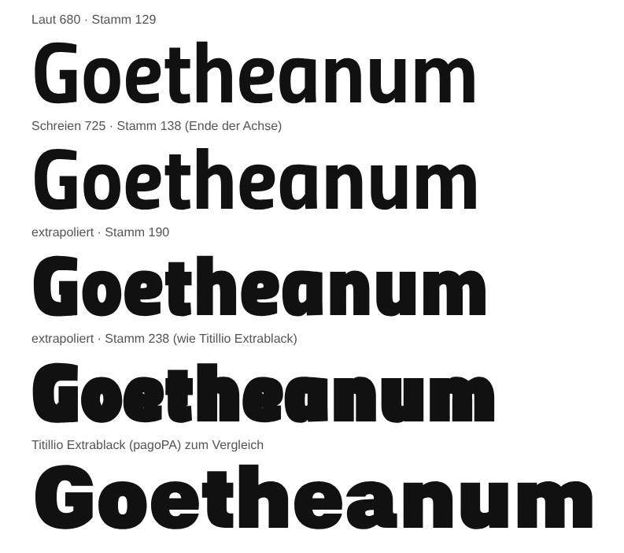

Hausschrift v2.9 neben v2.8
Abgleich mit Titillium Sans Pro: das Kerning der Pro für formgleiche Zeichen, 158 neue Zeichen aus den eigenen Buchstaben und Akzenten. Die Upright-Formen bleiben.
Kerning
Links v2.8, rechts v2.9. Versalpaare wie AV, LT, TY und Satzzeichen nach Versalien rücken enger; Paare mit a, g, y, t, l behalten das Hauskerning.
AVATAR · LTV · TYPO
Tyrann, Vortrag, «Wort». P. F. T. – 17. 4. 1924
AVATAR · LTV · TYPO
Tyrann, Vortrag, «Wort». P. F. T. – 17. 4. 1924
Tafel, Vogel, WAVE
Vom Wesen der Farben. Tag und Nacht, Vortrag und Wachheit: Tafel 7, Faust 1, Typoskript.
Tafel, Vogel, WAVE
Vom Wesen der Farben. Tag und Nacht, Vortrag und Wachheit: Tafel 7, Faust 1, Typoskript.
VERLAG · AUTOR · 7.
VERLAG · AUTOR · 7.
Neue Zeichen
Oben v2.8, unten v2.9. Was v2.8 nicht kennt, setzt der Browser in einer Ersatzschrift.
Über Laut hinaus
Probewort, aus Flüstern und Schreien linear weitergerechnet; darunter Titillio Extrablack. Kein Schnitt.
